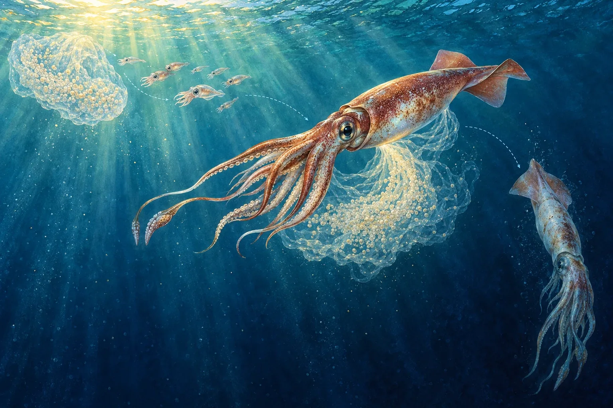
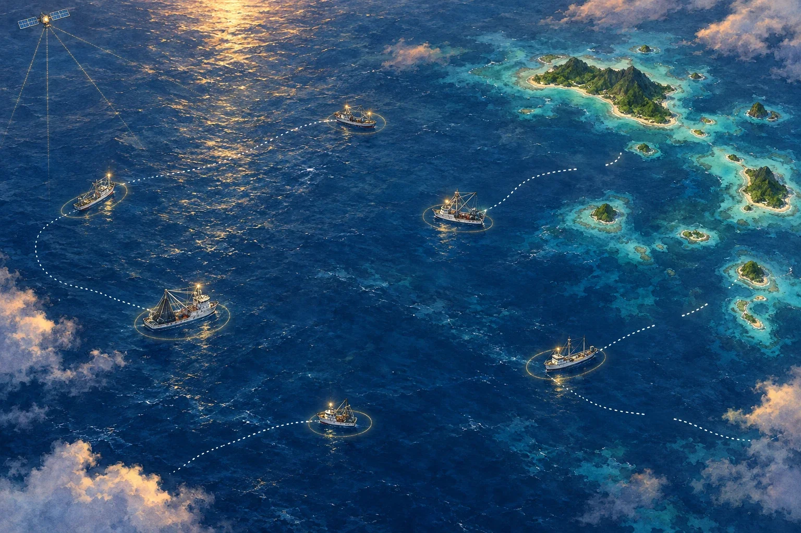
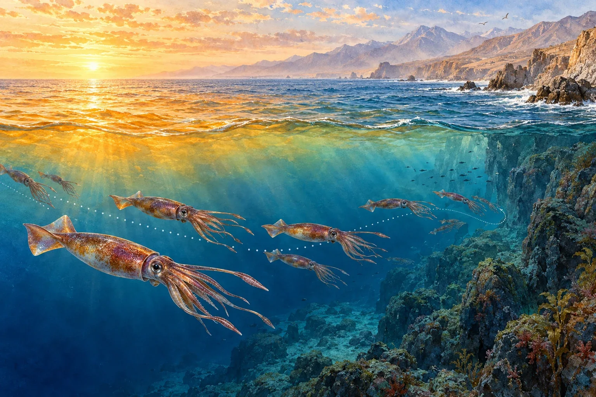
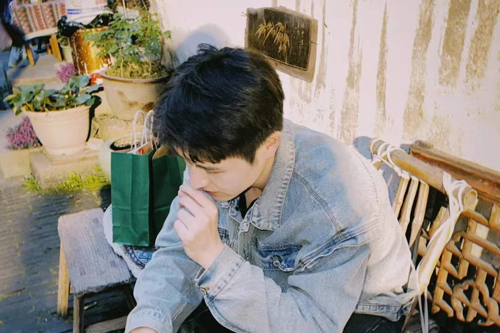
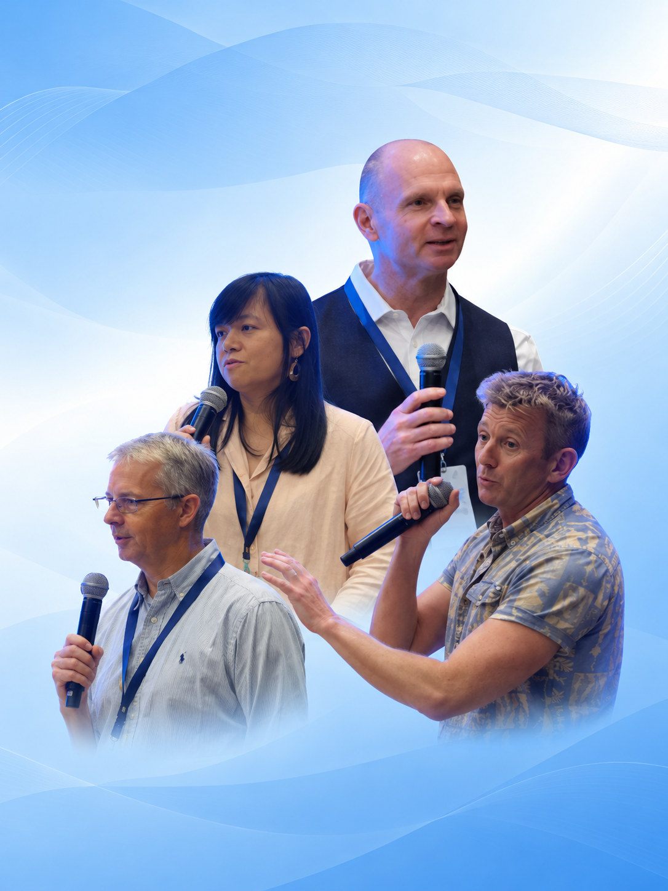
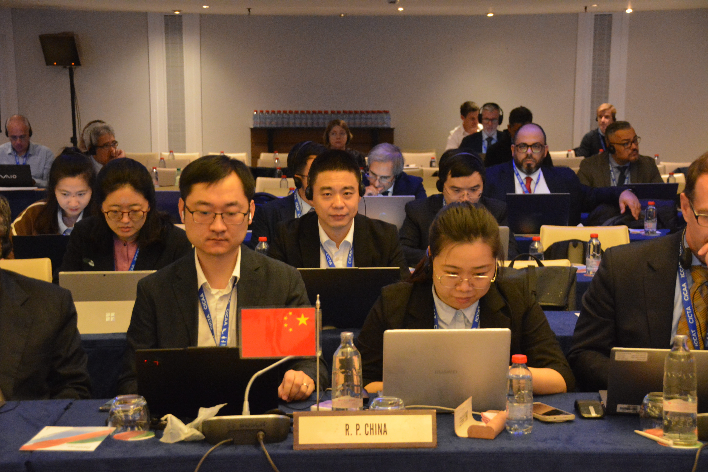

Mingfeng Jiang receives a 2026 National Scholarship
OFEL PhD student Mingfeng Jiang has received a 2026 National Scholarship.
Lab news
News, research updates, and life in the lab.
OFEL PhD student Mingfeng Jiang has received a 2026 National Scholarship.

A new model, ACLS, treats post-spawning death as part of squid population dynamics, and shows that ignoring it inflates estimates of spawning stock biomass.

Seven years of AIS records from 1,016 Pacific tuna vessels show that tracking gaps are shrinking, and pinpoint where vessels still go silent.

Machine learning applied to 28 years of fishery and ocean data shows that strong El Niño events bring jumbo squid spawning forward and shorten their migrations, driven mainly by sea surface temperature.
13–15 April 2026 · 09:30–17:00 · Professor André Punt, University of Washington.

A review of 133 stock assessments from five tuna management organisations shows that choices about model uncertainty follow the organisation more than the species, and proposes best practices to make them more consistent.

A joint SPC–Shanghai Ocean University seminar featuring Graham Pilling, Robert Scott, Joe Scutt Phillips, and Nan Yao.

OFEL's principal investigator is the first scientist from China to chair an ICCAT working group since the country joined the Commission in 1996.